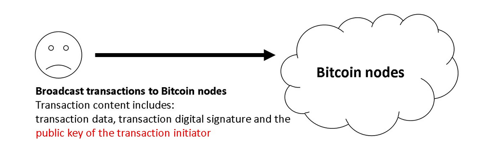
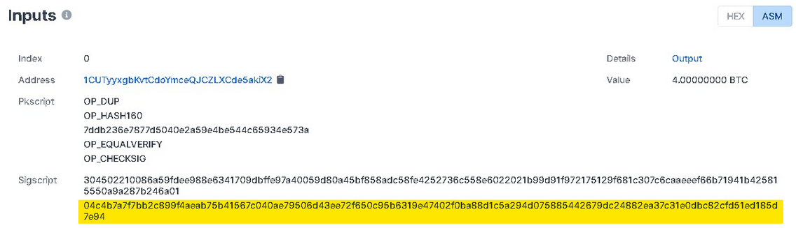
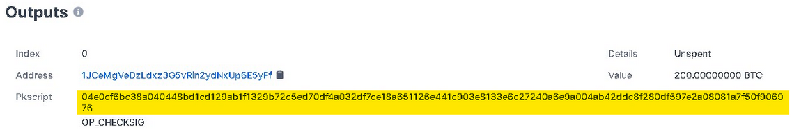
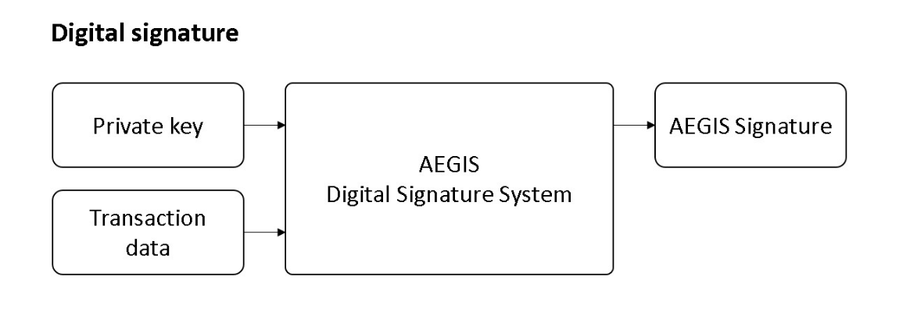
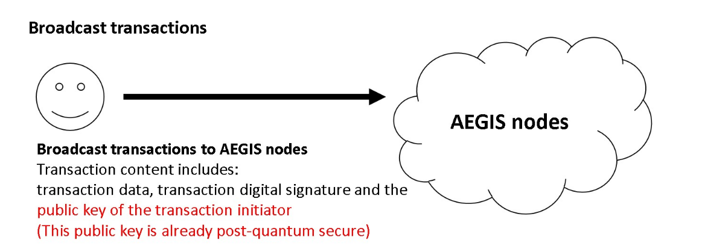

Bitcoin has evolved and the technology of digital currencies has swept the financial landscape. It is now difficult to ignore the existence of these technologies and the potential disruption they could still bring to the world. Bitcoin, along with most blockchain projects, uses the core security algorithm Elliptic Curve Signature (ECDSA) and its derivatives. The Elliptic Curve Signature will soon face a significant threat from universal quantum computers, and long-term holdings of these currencies will be extremely risky.
Universal quantum computers can use a special quantum algorithm invented by Peter Williston Shor, which is capable of outperforming the cracking speed of traditional supercomputers by an exponential multiple for all cryptographic systems based on discrete logarithm or large prime decomposition problems, including RSA and ECDSA.
Based on this quantum algorithm, a quantum computer can reverse-compute (crack) a wallet's private key in a short time when the wallet's public key is exposed on the blockchain (e.g., when the public key is publicly presented during a Bitcoin P2PKH transaction, or when the public key is exposed during a P2PK transaction in early Bitcoin), making the wallet no longer secure.
In this paper, we propose a multiple post-quantum cryptographic e-cash system with multiple post-quantum cryptography as the core security foundation to leapfrog the huge threat posed by quantum computers to blockchains. It is defined as a decentralized system with a balance of ease of use and post-quantum security, which is protected by multiple post-quantum ciphers to maintain a high level of security even if a single cryptosystem is breached, making it the best choice for long-term savings assets in the post-quantum era.
This paper also proposes a new consensus algorithm based on post-quantum cryptography, which is easier to mine on general-purpose CPUs and GPUs, and effectively reduces the advantage of dedicated mining machines (ASICs), thus preventing excessive concentration of computing power on dedicated mining machines.
In 1994, an American mathematician, Peter Williston Shor, invented a quantum prime factorization algorithm, Shor's algorithm, at Bell Labs, which is much more efficient than traditional computers for prime factorization and discrete logarithm problems. However, at that time, general-purpose quantum computers were not yet mature enough to make effective use of Shor's algorithm.
The development of general-purpose quantum computers has far exceeded the expectations of experts, and in the near future, these cryptosystems based on prime factorization and discrete logarithm problems will no longer be secure.
| System name | Based on problem | Remarks |
|---|---|---|
| RSA | Prime factorization | Most commonly used public key cryptosystem today (public key encryption and digital signatures) |
| ECC | Discrete logarithm | NIST originally decided to be the next generation of public key cryptosystem standard after RSA |
| D-H | Discrete logarithm | Key Exchange |
| ECDH | Discrete logarithm | A variant of D-H |
| ECDSA | Discrete logarithm | Digital signature, the security foundation for Bitcoin and most other word currencies |
| Schnorr | Discrete logarithm | Digital signature, supports multiple signatures, used by a few digital currencies, algorithm added by Bitcoin in 2021 |
Note: All ECC-like or ECDSA-like curve signatures or encryptions are mostly based on the discrete logarithm problem, so they are also threatened by quantum computers.
As described in Section II, the elliptic curve signature (ECDSA) used by Bitcoin is one of the targets of quantum computer threats. The cracking of elliptic curve signature mainly refers to the calculation of the correct private key in a short period of time when the owner's public key is known (which cannot be achieved by traditional computer algorithms), in order to undermine the security of the cryptosystem.
For a system like Bitcoin, which is based on elliptic curve signature security, the private key is really the wallet, and having the private key allows you to use the money in the corresponding wallet.
Here are some basic bitcoin security flaws, using a recent P2PKH (Pay To Pubkey Hash) transaction as an example. There are three main parts to what a user broadcasts during a transaction:
below:
P2PKH transactions expose the user's public key at the first transaction, and this public key is permanently recorded on the Bitcoin chain, making its corresponding private key no longer secure.
Note: All digital signature systems, including P2PKH, must use the public key to verify the legitimacy of the signature.
Because of the ease of access to Bitcoin's blockchain data, the public key of a transaction's wallet will be invisible and will eventually become the primary target of quantum computers, putting today's Bitcoin system, which has a total market value of about $1 trillion, under serious threat. The following figure shows the P2PKH transaction input (public key in yellow) as randomly queried by the www.blockchain.com block browser:
If the sender still has a balance in their wallet, they will be one of the targets of the quantum computer threat, and if they have 100 BTC in their wallet they will lose about $5 million.
The P2PK (Pay To Pubkey) transactions used by early Bitcoin are even more vulnerable. The difference between P2PK and P2PKH is that the address of the P2PK when receiving Bitcoins is itself the public key, not a public key hash like P2PKH, which will expose the public key itself earlier, resulting in a quantum computer threat even if the wallet has never transferred coins. The following figure shows the output of an early P2PK transaction randomly queried by the www.blockchain.com block browser, with the public key in yellow:
If this recipient has 200 BTC in their wallet that has not yet been spent or has a larger balance, the owner of this wallet will lose this 200 BTC (approximately $10 million) or more under the threat of a quantum computer.
With quantum computers, the Hewer algorithm, and the aforementioned transaction basis, Bitcoin faces two major problems:
First, even if a P2PKH type wallet has been transferred out with an extremely secure private key (e.g., hard cold wallet, written on paper and sealed, etc.), the private key can still be stolen (decrypted) and all the coins in the wallet lost.
Second, a large number of bitcoins were lost by early participants of bitcoin (lost wallet private key) using P2PK because the public key has long been exposed and vulnerable to quantum computer decryption. So far, it is estimated that about 4 million bitcoins (about 20% of the total, the current market value of $200 billion) have been lost.
The focus of post-quantum cryptography is to ensure the security features of quantum computers even after they become popular. These digital currencies will no longer be secure when a general-purpose quantum calculator equipped with Hewer's algorithm becomes available in the near future. At the time of writing, general-purpose quantum computers are still a long way from breaking this cryptography, but the development of quantum computers has exceeded the expectations of experts and stakeholders in the field, and most digital currencies, including Bitcoin, will be greatly impacted once quantum computers become commnplace.
On December 20, 2016, NIST submitted a request for nominations of public-key post-quantum cryptographic algorithms, and after three rounds of selection, a conclusion was tentatively reached that there are currently two main categories of relatively reliable post-quantum signature algorithms:
| Name | AEGIS PQC |
| Code | aPQC |
| Mining algorithm | PQPoW (PoW) |
| Structure type | Public chain blockchain |
| Core security | Multiple post-quantum cryptography, which includes but is not limited to various post-quantum digital signatures selected by NIST2020 |
| Total number of issues | 210,000,000 |
| Release year | Approximately 77 years (to the end of the century) |
| Code base | 100% customizable, unique and extensible, and all code and documentation is open-sourced with the Genesis block |
In this paper, we use the same UTXO structure as Bitcoin. During the transaction, the transferring party must prove that it is the legitimate owner of UTXO through a digital signature, and set the output script to restrict future users of this transaction. Quantum Shield Master has improved its core algorithm of digital signatures to directly resist the threat of quantum algorithms.
 Bitcoin's proof of workload came in 2012 when it was realized that mining efficiency could be improved by designing specialized ASIC integrated circuits to perform hash calculations exclusively. It has been shown that ASIC mining is hundreds of times faster than GPU or CPU mining with the same energy consumption, and this has almost dismantled the original concept of one CPU, one vote, "majority" decision expressed as the longest chain in Bitcoin.
In this paper, we propose a new mining algorithm that uses some post-quantum cryptography problems as the basis for workload proofs. This approach can effectively suppress the ASIC advantage over general-purpose CPUs and GPUs, and make its miners more widely diversified in terms of participants, as in the case of ETH or early BTC. Although POW has been widely criticized in the past, it is still the best choice in terms of security.
As with Bitcoin, the first transaction of each block is specialized to produce a new minted coin (mining reward) owned by the creator of the block. This increases the incentive for nodes to support the network, and provides a way to distribute electronic money into circulation without a centralized authority issuing the currency. This method of continuously adding a certain amount of new money to the monetary system is very similar to expending resources to mine gold and inject it into circulation. At this point, the time and power consumption of the CPU and GPU are the resources consumed.
Incentives:
| Block time | approx. 10 minutes |
| Coin life | approx. 77 years (until the end of the century) |
| Initial reward | 240 |
| Yield per reduction | Each reduction is approximately of the previous one $$\frac{1}{\sqrt[8]{2}} \approx 91.7\%$$ |
| Duration of yield reduction | It takes 3.3% longer time to produce a subsequent unit than the previous year. For example, if it takes one year to produce the first unit, it take 1.03 years to produce the second unit. $$T_n = T_{n-1} \times 103.3\%$$ |
| Total | 210,000,000 |
Projected block reward reduction graph (according to different reward intervals):
Projected block reward reduction graph (by yearly interval):
Projected Coin Out Accumulation Chart (by Bonus Interval):
Projected Coin Out Accumulation Chart (by yearly interval):
Although NIST has selected a variety of post-quantum algorithms for the world, this is just the beginning, and there is no guarantee that the algorithms eventually approved by NIST will be secure, just as NIST once claimed that ECC could replace RSA.
The ultimate goal of this paper is to propose a decentralized digital currency with multiple quantum resistances that can operate safely without immediate forking even if one of the post-quantum algorithms is cracked, and to buy buffer time for system upgrades, making it the most secure long-term property protection solution even after universal quantum computers become popular.